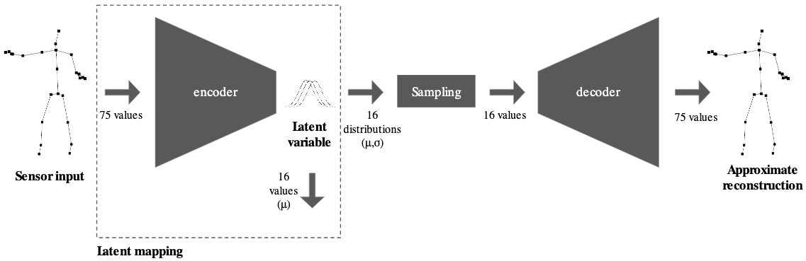

class: center, middle .title[Creative Coding and Software Design 3] <br/><br/> .subtitle[PyTorch and VAEs] <br/><br/><br/><br/><br/><br/> .date[Nov 2025] <br/><br/><br/> .note[Created with [Liminal](https://github.com/jonathanlilly/liminal) using [Remark.js](http://remarkjs.com/) + [Markdown](https://github.com/adam-p/markdown-here/wiki/Markdown-Cheatsheet) + [KaTeX](https://katex.org)] ??? Author: Grigore Burloiu, UNATC --- name: toc class: left # ★ Table of Contents ★ <!-- omit in toc --> 1. [Variational Autoencoders](#variational-autoencoders) 2. [Training](#training) 3. [PyTorch implementation](#pytorch-implementation) 4. [RAVE](#rave) <!-- Comment out the next slide if you don't want the Table of Contents link --> --- layout: true .toc[[★](#toc)] --- name: variational-autoencoders # Variational Autoencoders recap [autoencoders](03-06-unsupervised#autoencoders) -- [<p></p>](https://nime.pubpub.org/pub/latent-mappings/release/1) -- - "variational" due to the **sampling layer** - `z` latent variable - Normal distribution ↔ `(mean, average)` --- name: training # Training gradient descent -- *stochastic* g. d. = not over the whole batch/dataset, but random *minibatches* - https://github.com/fastai/course-v3/blob/master/nbs/dl1/lesson2-sgd.ipynb if training fails: - check your data: redundant, noisy? - check params: learning rate & no. of epochs - check your data!!! do you have enough? is it representative? - get more data, just in case :) <br/><br/> - classic karpathy torch [training tips](https://twitter.com/karpathy/status/1299921324333170689) --- name: pytorch-implementation # PyTorch implementation [official tutorials](https://docs.pytorch.org/tutorials/) see my VAE torch vids on classroom 1. get data 2. define model 3. train model 4. run inference - code [on github](https://github.com/RVirmoors/latent-mappings-vae/tree/main) -- training fails to optimise loss. why? --- name: rave # RAVE .left-column[ train a model on your own sounds transform (style transfer) / generate material in real time manipulate latent dimensions during performance - mapped to other inputs (multimodal) - coming from other performers? <br/> - [vst plugin](https://forum.ircam.fr/projects/detail/rave-vst/) ] .right-column[ <iframe width="100%" height="250" src="https://www.youtube.com/embed/dMZs04TzxUI" title="YouTube video player" frameborder="0" allow="accelerometer; autoplay; clipboard-write; encrypted-media; gyroscope; picture-in-picture" allowfullscreen></iframe> <iframe width="100%" height="250" src="https://www.youtube.com/embed/HC0L5ZH21kw?start=370" title="YouTube video player" frameborder="0" allow="accelerometer; autoplay; clipboard-write; encrypted-media; gyroscope; picture-in-picture" allowfullscreen></iframe> ] --- ## Training a RAVE model get models: [IRCAM](https://acids-ircam.github.io/rave_models_download), [IIL](https://iil.is/news/ravemodels) -- [official training tutorial](https://forum.ircam.fr/article/detail/training-rave-models-on-custom-data/) @ IRCAM <iframe width="100%" height="350" src="https://www.youtube.com/embed/MlbkSMLoWBk" title="YouTube video player" frameborder="0" allow="accelerometer; autoplay; clipboard-write; encrypted-media; gyroscope; picture-in-picture" allowfullscreen></iframe> - [Neural Synthesis with RAVE](https://www.theseus.fi/handle/10024/868480): A Practical Guide on how to Integrate Neural Synthesis inside your Music Production - [hands-on guide](https://github.com/acids-ircam/RAVE/discussions/300) @github. Training a model takes *days*.